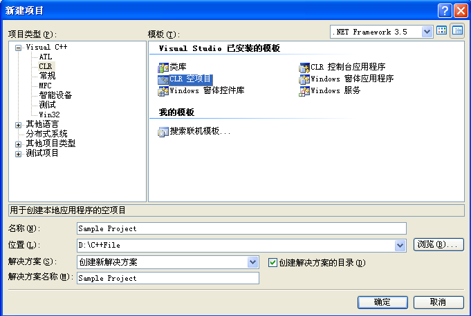
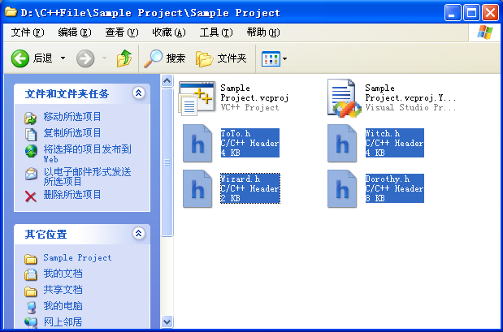
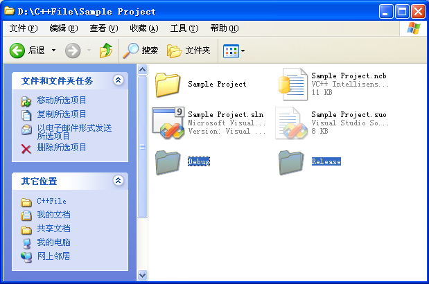
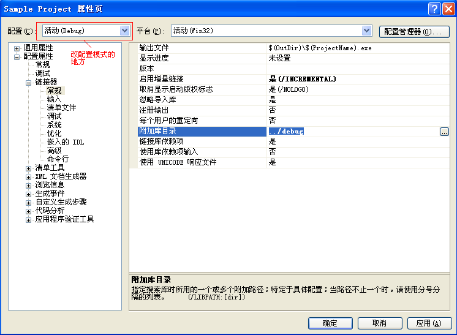

使用Dorothy 1.0
如果要用Dorothy来制作游戏的话，首先写C++的环境比如Visual Studio 2005/2008/2010是必备的，再装个Visual Assist X可以帮助让编程变成一种享受。
然后是具体Dorothy配置方法。
Step1 建立工程和拷贝文件
在Visual Studio中创建一个C++的控制台应用程序工程，如图

然后将需要的库的头文件（Header）和库文件（Library）拷到项目中。如上图里，我把解决方案名和工程名都起名为Sample Project，而解决方案的位置在D:\C++File下面，那么需要的头文件就应该拷到D:\C++File\Sample Project\Sample Project下面，如图

接下来把Dubug和Release两个文件夹下的库文件(包括.lib和.dll文件)拷到解决方案目录下的Debug和Release文件夹中，如果没有这两个文件夹就自己建。
库文件拷贝目录位置

Step2 配置工程和添加文件
在Visual Studio下对项目(不是解决方案点右键进入属性页面，然后分别在debug设置和release设置模式下，把“配置属性—>链接器—>常规—>附加库目录”对应的改为../debug和../release并点击应用。

然后在项目中添加现有项，把需要库的头文件添加进工程里。最后在程序中#include所用组件的头文件，并using namespace 引入对应的命名空间，然后在程序里就可以用了。
还要说的是使用Dorothy的某个组件部分需要使用的库文件头文件命名空间的对应关系，如图
|
使用的部分 |
拷贝库文件 |
添加头文件和引用 |
引入命名空间 |
|
Dorothy |
Dorothy.dll Dorothy.lib |
Dorothy.h #include "Dorothy.h" |
Using namespace Dorothy; |
|
Witch |
Dorothy.dll Dorothy.lib Witch.dll Witch.lib |
Dorothy.h Witch.h #include "Witch.h" |
Using namespace Witch; |
|
Wizard |
Wizard.dll Wizard.lib |
Wizard.h #include "Wizard.h" |
Using namespace Wizard; |
|
ToTo |
Dorothy.dll Dorothy.lib ToTo.dll ToTo.lib |
ToTo.h #include "ToTo.h" |
Using namespace ToTo; |
Step3 发布用Dorothy制作的程序
用Dorothy开发的程序如果要发布出来给别人用，那么除了你的程序使用的资源文件外还要一起发布的是程序使用到的Dorothy的Release版dll。还有就是用Visual Studio开发的程序要在其它没装过VS的电脑上运行可能得安装一个叫vcredist_x86.exe，用来支持VS开发的C++发布程序运行的补丁。还有一个无语的问题是不知道微软做了什么，用VS开发的控制台程序的运行居然还需要.net framework的支持(具体哪个版本的.net framework不清楚，但是3.5应该是支持的，因为在vista和win7上没出现过这个问题）。